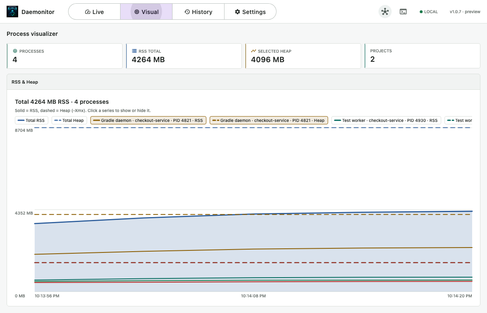
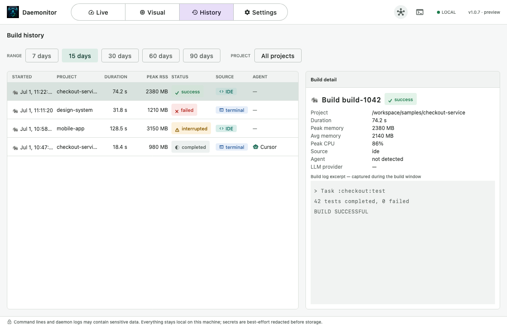

Modern agentic workflows run Gradle from many places at once. Daemonitor gives you one
local window into that activity.
Concurrent triggers
IDEs, terminals, scripts, and coding agents can all start Gradle builds at the same time.
Hidden load
Daemons and test workers can consume significant CPU and memory without an obvious owner.
Local clarity
Get a simple view of current processes and recent builds without leaving your machine.
Feature highlights
Live processes, memory timelines, and searchable build history — including AI-agent attribution.
Live Monitor
Watch every Gradle-related JVM as it runs: daemons, wrappers, Kotlin daemons, and
test workers, with RSS, CPU, uptime, process details, and memory-pressure indicators.
Gradle daemons, wrappers, Kotlin daemons, and test workers
RSS, CPU, and live uptime
Process and JVM details with concurrent-build indicators
Memory-pressure badges when usage climbs
Visual
See rolling RSS timelines alongside configured heap (-Xmx) so concurrent
Gradle processes are easy to compare at a glance.
Rolling RSS timelines across live processes
Configured heap / -Xmx when recoverable
Memory usage across concurrent Gradle processes

Build History
Browse recent builds with duration, outcome, peak resources, source, and AI-agent
attribution — then search history when you need the details.
Recent builds with duration and outcome
Peak resources and invocation source
AI-agent attribution when a coding agent triggered the build
Searchable retained history

MCP / Agent workflows
Daemonitor can expose a local, read-only MCP interface so compatible tools inspect
retained build history and currently visible Gradle processes — without sending data off
your machine.
Your build data stays on your machine.
Daemonitor is local-first by design. Privacy is a product feature, not a settings toggle.
No telemetry — nothing is phoned home about your builds or machine.
Local SQLite storage — history lives in a database on your computer.
Best-effort redaction — command lines and logs are redacted before storage.
Local read-only MCP — agent access stays on localhost and cannot mutate builds.
Limited network use — outbound access is limited to GitHub release and update checks.
Download
Packaged builds are ready for macOS, Windows, and Linux. They do not require you to install
or configure Gradle locally. Source is available on GitHub for contributors.